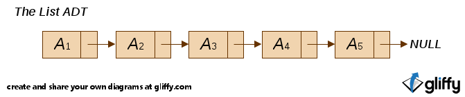

表、栈和队列
抽象数据类型
- abstract data type, ADT
- 一些操作的集合
- 是数学的抽象
- 如表、集合、图和它们的操作一起被看作是一种抽象数据类型
- 就像整数实数布尔量等数据类型一样，它们有相关的操作。
表(List ADT)
- A1,A2,A3 ... AN;表的大小为N
- 操作：PrintList MakeEmpty Insert Delete Find FindKth
- Ai+1 后继 Ai; Ai前驱Ai+1
- Ai+1是Ai的后继元(Successor)；Ai是Ai+1的前驱元(Predecessor)
基于数组的实现
- 需要对表的大小进行最大值预估
- PrintList Find 是线性时间
- FindKth是常数
- Insert Delete 需要移动元素，是O（N）
链表(Linked List)
- 由一系列在内存中 不必相连 的结构组成。
-
每个结构中包含元素和指向后继元结构的指针
Next, 最后一个单元Next指向NULLstruct Node{ ElementType Element; struct Node *Next; }

-
操作
#ifndef _List_H struct Node; typedef struct Node *PtrToNode; typedef PtrToNode List; typedef PtrToNode Position; List MakeEmpty( List L ); int IsEmpty( List L ); int IsLast( Position P, List L ); Position Find( ElementType X, List L ); void Delete( ElementType X, List L ); Position FindPrevious( ElementType X, List L ); void Insert( ElementType X, List L, Position P ); void DeleteList( List L ); Position Header( List L ); Position First( List L ); Position Advance( Position P ); ElementType Retrieve( Position P ); #endif /* _List_H */ /* Place in the interface file */ struct Node { ElementType Element; Position Next; }; - 资源: list.h, list.c, testlist.c
双链表(Doubly Linked List)
循环链表(Circularly Linked List)
© 2012 王兴朝